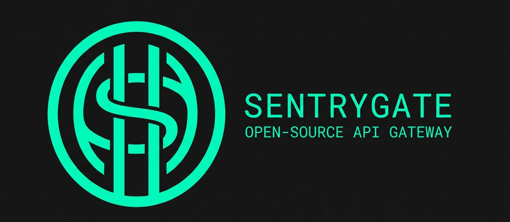

Open-Source API Gateway
A high-performance, minimalist API gateway built on Bun. It acts as a secure front door for your microservices — handling routing, authentication, rate-limiting, and WebSocket proxying — configured entirely through a single .toml file.
Core principles
Bun's ultra-fast runtime and native Fetch API keep your gateway out of the critical path.
Built-in authentication, header masking, and configurable rate limiting at the edge.
Handles thousands of concurrent requests without session state or coordination overhead.
Your entire routing and auth infrastructure lives in a single .toml file.
Capabilities
SentryGate is designed as a single-binary, single-process gateway. Rate limiting state lives in-memory per process. For multi-instance deployments requiring shared rate limit state, an external coordinator like Redis is needed.
Distribution
No Bun or Node.js installation required. Download the standalone executable for your OS. Each binary is compiled specifically for its target platform.
sentrygate binary in early releases was compiled on macOS (Mach-O format) and will not run on Linux servers despite the filename suggesting otherwise. Always use the platform-specific binary below.
| Platform | Architecture | Format | Download |
|---|---|---|---|
| Windows | x64 | PE32+ executable | sentrygate.exe |
| Linux | x64 | ELF 64-bit | sentrygateLinux |
| macOS | x64 | Mach-O 64-bit | sentrygate |
Setup
Download and install the binary for your platform. Make sure to use the correct binary for your OS.
# Download the Linux binary
$ curl -L https://github.com/emekadefirst/SentryGate/releases/download/Pilot/sentrygateLinux -o sentrygate
# Make it executable BEFORE moving
$ chmod +x sentrygate
# Move to PATH
$ sudo mv sentrygate /usr/local/bin/sentrygate
# Verify
$ sentrygate start# Download the macOS binary
$ curl -L https://github.com/emekadefirst/SentryGate/releases/download/Pilot/sentrygate -o sentrygate
# Make it executable
$ chmod +x sentrygate
# Move to PATH
$ sudo mv sentrygate /usr/local/bin/sentrygate
# Verify
$ sentrygate startC:\tools\)PS> sentrygate startCreate sentrygate.toml in the directory where you run SentryGate. All service targets should use localhost when running on the same machine as your services.
[base]
logging = true
default_rate_limit = true
custom_rate_limit = false
[server]
port = 80
name = "my-gateway"
ssl_enabled = false
# HTTP service
[services.api]
target = "http://localhost:8000"
strip_prefix = true
auth_required = false
timeout_ms = 5000
rate_limit = 60
# WebSocket service — note ws_required flag
[services.chat]
target = "http://localhost:3000"
strip_prefix = true
auth_required = false
ws_required = true
# omit timeout_ms for WebSocket routes — defaults to 30s but never hits for WSRun SentryGate from the directory containing your sentrygate.toml.
$ sentrygate startReal-time
SentryGate proxies WebSocket connections natively using Bun's server.upgrade(). When an upgrade header is detected, the route is resolved and the connection is handed off to Bun's WebSocket handler — bypassing the HTTP proxy path entirely.
ws_required = true flag in your service config. Without it, upgrade requests fall through to the HTTP proxy path and fail. This flag is not shown in the basic docs — it is only visible in the source code.
Client WebSocket connect
│
▼
SentryGate detects "upgrade: websocket" header
│
▼
Resolves route → checks ws_required = true
│
▼
server.upgrade() — hands off to Bun WS handler
│
▼
Bun opens upstream WebSocket to target service
│
├─ upstream → client (onmessage relay)
└─ client → upstream (message relay)
Closing either side closes both.[services.chat]
target = "http://localhost:3000" # http:// is converted to ws:// internally
strip_prefix = true
auth_required = false
ws_required = true # required — enables WS upgrade path
# do not set timeout_ms = 0, it will error. Omit the field entirely.timeout_ms = 0 — the validator rejects it. For WebSocket routes, simply omit timeout_ms entirely. The timeout field has no effect on WebSocket connections anyway since upgrades bypass the HTTP fetch path.
Security
SentryGate handles TLS natively via Bun's built-in TLS layer. Point it at your cert and key files and set ssl_enabled = true.
[server]
port = 443
name = "my-gateway"
ssl_enabled = true
cert_path = "/etc/letsencrypt/live/yourdomain.com/fullchain.pem"
key_path = "/etc/letsencrypt/live/yourdomain.com/privkey.pem"# Install certbot and issue a cert for your domain
$ sudo apt install certbot -y
$ sudo certbot certonly --standalone -d yourdomain.com
# Certs are placed at:
# /etc/letsencrypt/live/yourdomain.com/fullchain.pem ← cert_path
# /etc/letsencrypt/live/yourdomain.com/privkey.pem ← key_path
# Check existing certs
$ sudo certbot certificatesLet's Encrypt certs expire every 90 days. Certbot installs a renewal cron job automatically. SentryGate reads the cert files on startup, so after renewal restart SentryGate to pick up the new cert.
Integration
A minimal FastAPI app running on port 8000, fronted by SentryGate on port 80.
# main.py
from fastapi import FastAPI
app = FastAPI()
@app.get("/api/health")
async def health():
return {"status": "ok"}
@app.get("/api/users")
async def users():
return [{"id": 1, "name": "Alice"}][base]
logging = true
default_rate_limit = true
custom_rate_limit = false
[server]
port = 80
name = "my-gateway"
ssl_enabled = false
# All /api/* requests proxied to FastAPI
[services.api]
target = "http://localhost:8000"
strip_prefix = true
auth_required = false
timeout_ms = 5000
rate_limit = 60# Terminal 1 — start FastAPI
$ uvicorn main:app --host 0.0.0.0 --port 8000
# Terminal 2 — start SentryGate
$ sentrygate start
# Traffic flow:
# curl http://localhost/api/health
# → SentryGate (port 80)
# → FastAPI (port 8000)
# → { "status": "ok" }SentryGate handling a REST API alongside a WebSocket server on the same port.
[base]
logging = true
default_rate_limit = true
custom_rate_limit = false
[server]
port = 443
name = "my-gateway"
ssl_enabled = true
cert_path = "/etc/letsencrypt/live/yourdomain.com/fullchain.pem"
key_path = "/etc/letsencrypt/live/yourdomain.com/privkey.pem"
# REST API — Python/FastAPI on 8000
[services.api]
target = "http://localhost:8000"
strip_prefix = true
auth_required = false
timeout_ms = 5000
# WebSocket server — Bun/Node on 3000
[services.chat]
target = "http://localhost:3000"
strip_prefix = true
auth_required = false
ws_required = trueProduction
On a Linux server, use nohup to keep SentryGate running after you close your SSH session.
# Run in background, pipe logs to file
$ nohup sentrygate start &> /var/log/sentrygate.log &
# Note the printed PID — save it if you need to stop later
# [1] 3542027 ← job number and PID# Check it's running
$ ps aux | grep sentrygate
# View live logs
$ tail -f /var/log/sentrygate.log
# List background jobs in current shell
$ jobs
# Stop SentryGate
$ pkill sentrygate
# Or stop a specific job number
$ kill %1[2] job number printed by the shell means it's the second background job in your session. If you have a stale previous instance running, kill job %1 to avoid two processes competing on the same port.
$ curl https://yourdomain.com/sentry-statusDevelopment
Bun supports cross-compilation targets. You can build a Linux binary from Windows or macOS using the --target flag.
# Cross-compile for Linux from any OS (Windows, macOS)
$ bun build --compile --target=bun-linux-x64 ./src/index.ts --outfile sentrygateLinux
# Output: sentrygateLinux — ELF 64-bit, runs on Linux x64# Compile for the OS you are currently running on
$ bun install
$ bun build ./src/index.ts --compile --outfile sentrygate# Run from source without compiling
$ bun install
$ bun run src/index.ts startObservability
SentryGate ships with a built-in health check and status endpoint. It returns the gateway name, status, and total requests handled.
Logs are written to sentrygate.log in structured JSON format, one line per request:
{
"timestamp": "2026-04-18T12:00:00.000Z",
"id": "019123ab-...",
"method": "GET",
"path": "/api/users",
"status": 200,
"duration": "12.34ms"
}Codebase